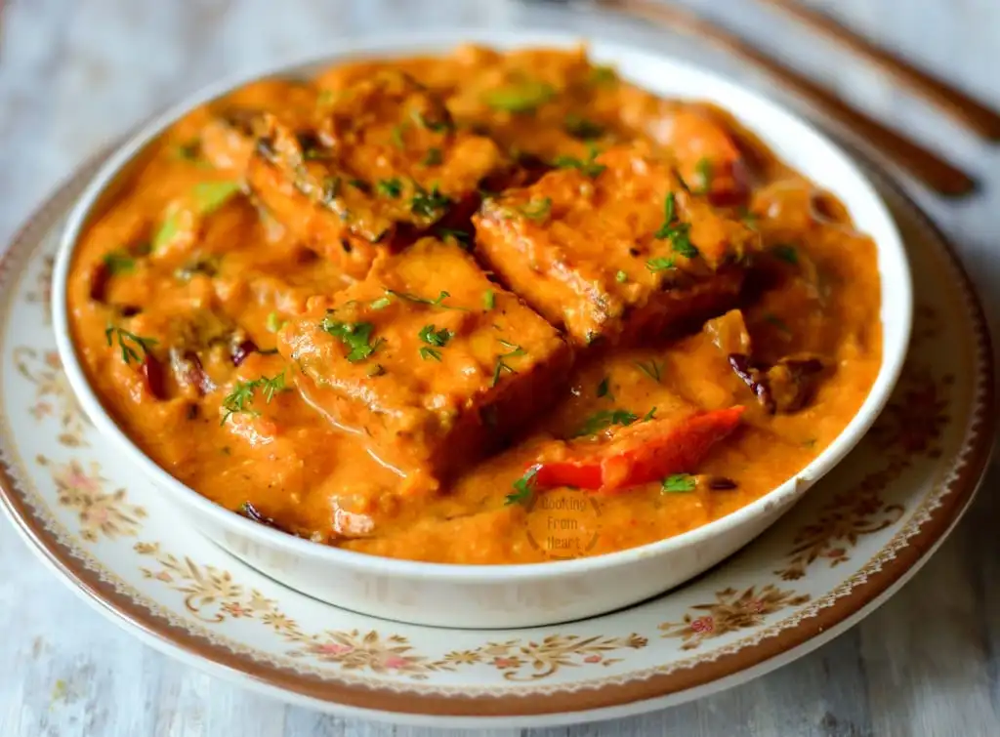

Paneer-Tikka-Masala

Description
Paneer Tikka Masala is a popular Indian dish consisting of marinated and grilled paneer (Indian cottage cheese)
cubes cooked in a rich and creamy tomato-based gravy.
Ingredients
Paneer Tikka:
- Paneer (Indian cottage cheese), cut into cubes
- Yogurt
- Ginger-garlic paste
- Tandoori masala or garam masala
- Red chili powder
- Turmeric powder
- Salt
- Oil
Gravy:
- Oil or ghee (clarified butter)
- Salt
- Fresh cream
- dried fenugreek leaves
- Coriander powder
- Turmeric powder
- Red chili powder
- Tandoori masala or garam masala
- Green chilies,slit
- Ginger-garlic paste
- Cashew nuts, soaked and blended into a paste
- Tomatoes, pureed
- Onion, finely chopped
Steps
- Marinate paneer in yogurt, ginger-garlic paste, tandoori or garam masala, red chili powder, turmeric, salt,
and oil for 30 minutes.
- Grill marinated paneer cubes until lightly charred; set aside.
- Sauté chopped onions in oil or ghee until golden brown.
- Add ginger-garlic paste and green chilies (optional); cook until fragrant.
- Stir in tomato puree and cook until the oil separates.
- Season with tandoori or garam masala, red chili powder, turmeric, coriander powder, and salt; cook briefly.
- Mix in cashew nut paste, add grilled paneer cubes, crushed kasuri methi, and cream; simmer until the gravy
thickens. Garnish with cream and chopped coriander leaves. Serve hot with naan, roti, or rice.